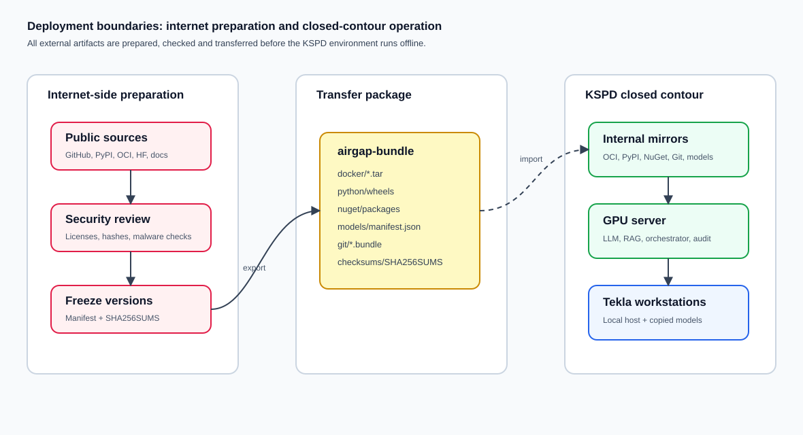

План развертывания MVP
Практический runbook для подготовки GPU-сервера, внутренней поставки зависимостей, запуска сервисов MVP и подключения рабочих мест Tekla. Документ написан для инфраструктуры, эксплуатации и технического руководителя пилота.
1. Границы развертывания

Развертывание делится на подготовку внешних артефактов и работу внутри закрытого контура. Все Docker images, Python wheels, NuGet packages, Git bundles, модели и документация должны быть заранее собраны, проверены, захешированы и импортированы во внутренние хранилища.
2. Инвентаризация перед установкой
| Что проверить | Минимально нужно зафиксировать | Почему это важно |
|---|---|---|
| GPU и драйвер | Модель карты, объем VRAM, версия драйвера, результат `nvidia-smi`. | От этого зависит модель, quantization, CUDA/PyTorch runtime и возможность fine-tuning. |
| CPU/RAM/Storage | i9-12900, 64 GB RAM, SSD/HDD layout, свободное место под модели и Docker layers. | 512 GB SSD быстро закончится; модели, datasets и cache лучше вынести на отдельный NVMe/раздел. |
| Сеть | DNS-имя сервиса, доступы рабочих мест к API, доступы администраторов, TLS. | Нужно исключить неучтенные endpoint и ручные обходы. |
| Tekla workstations | Версия Tekla Structures, .NET/Windows, права установки локального host. | Tekla Open API адаптер должен собираться и запускаться в совместимой среде. |
3. Подготовка GPU-сервера
- Установить ОС. Базовый вариант - Ubuntu 24.04 LTS, отдельные разделы под Docker, модели, audit и datasets.
- Установить NVIDIA driver. Версия выбирается под фактическую GPU и согласуется с выбранным CUDA/PyTorch runtime.
- Установить Docker и NVIDIA Container Toolkit. Проверить запуск GPU контейнера и доступность устройства внутри контейнера.
- Подготовить Python runtime. Для MVP использовать Python 3.12 или 3.13; не закреплять неподтвержденные версии.
- Настроить сервисные учетные записи. Отдельный пользователь для orchestrator, ограниченные права на директории и журналы.
- Настроить мониторинг. CPU, RAM, GPU, диск, HTTP health, ошибки orchestrator, размер audit logs.
Важно: `scripts/bootstrap_ubuntu_gpu.sh` является стартовым шаблоном, а не unattended-инсталлятором для production.
Перед применением его нужно адаптировать под внутренние репозитории пакетов и утвержденные версии.
4. Поставка зависимостей в закрытый контур
| Категория | Что включить | Контроль |
|---|---|---|
| Docker / OCI | Qdrant, Ollama или другой LLM server, nginx, base image для orchestrator. | Версия, digest, источник, дата загрузки, результат scan. |
| Python wheels | FastAPI stack, httpx, pydantic, PyYAML, pytest/ruff для проверок, optional Qdrant client. | Lock-файл, hash, установка без внешнего доступа. |
| NuGet | Newtonsoft.Json и зависимости workstation host; позже - утвержденные Tekla Open API references. | Внутренний NuGet feed, версии, совместимость с workstation. |
| Модели | GGUF/HF snapshots для Qwen/DeepSeek или выбранной альтернативы. | License, source revision, sha256, hardware profile, назначение. |
| Git mirrors | Текущий репозиторий, Tekla examples, MCP references, внутренние примеры. | Зеркало в корпоративном Git, запрет прямого pull из интернета в штатном контуре. |
powershell
.\scripts\prepare_airgap_bundle.ps1 -OutputDir airgap-bundle
5. Запуск MVP-сервисов
- Скопировать `.env.example` в `.env`. Заполнить `LLM_BASE_URL`, `LLM_MODEL`, `RAG_CHUNKS_PATH`, `AUDIT_LOG_PATH`.
- Подготовить RAG-корпус. Запустить chunking только по разрешенным источникам и проверить JSONL.
- Запустить LLM server. Для быстрого MVP подойдет llama.cpp/Ollama; для throughput - vLLM/SGLang после проверки GPU.
- Запустить orchestrator. Проверить `/health`, доступ к LLM, доступ к RAG и запись audit.
- Поставить nginx/TLS. Внешним клиентам отдавать только внутренний HTTPS endpoint, не raw debug-порты.
- Прогнать smoke tests. Проверить read-only flow, dry-run mutation, блокировку unknown tool, запись audit.
bash
docker compose -f docker-compose.mvp.yml up --build
6. Подключение рабочего места Tekla
| Шаг | Действие | Критерий готовности |
|---|---|---|
| 6.1 | Собрать `TeklaWorkstationHost` на машине с установленным .NET SDK/Build Tools. | Host стартует и отвечает на `GET /health`. |
| 6.2 | Запустить host в stub-режиме рядом с Tekla, убедиться, что orchestrator может отправить dry-run. | Dry-run не меняет модель и возвращает понятный результат. |
| 6.3 | Подключить Tekla Open API adapter для `GetSelection`, `QueryObjects`, `ValidateModel`. | Read-only tools возвращают данные с тестовой модели. |
| 6.4 | Добавить create tools только для копий моделей и только после approval. | Без approval header host блокирует mutating request. |
| 6.5 | Оформить установочный пакет и инструкцию отката. | Workstation host можно удалить или отключить регламентно. |
7. Acceptance checklist
До пилота
- Сервисы запускаются без внешнего доступа.
- LLM endpoint стабилен на тестовых запросах.
- RAG источники имеют owner и статус проверки.
- Policy tests проходят.
- Audit пишется для chat и tool calls.
Перед промышленной эксплуатацией
- Есть operational runbook и канал поддержки.
- Есть backup/restore и rollback plan.
- Есть pilot report и список известных ограничений.
- Есть утвержденный model catalog.
- Есть регламент обновления моделей, prompts, tools и RAG.